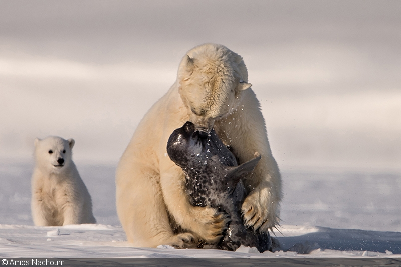
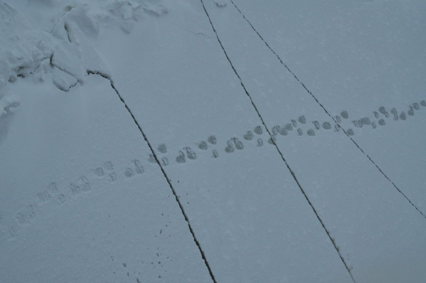
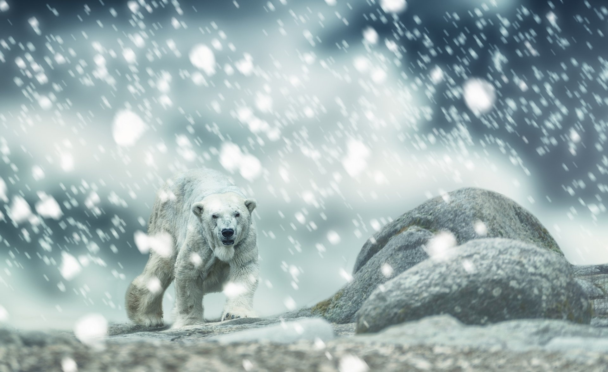
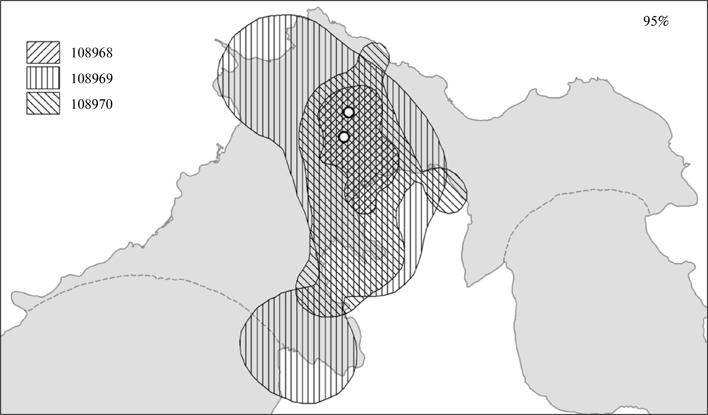
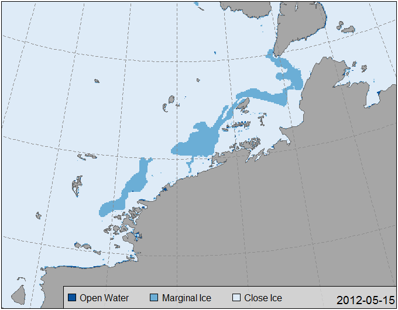
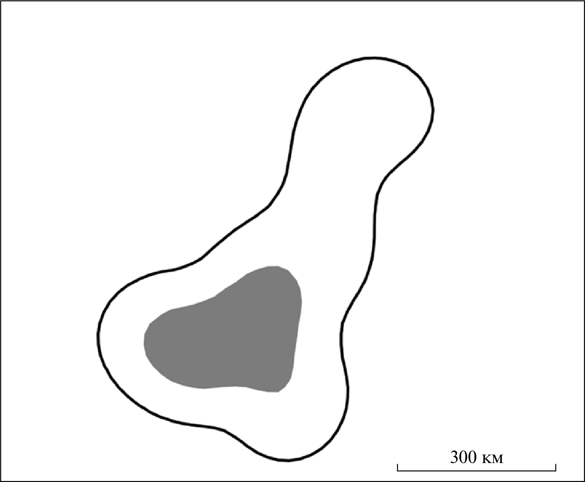
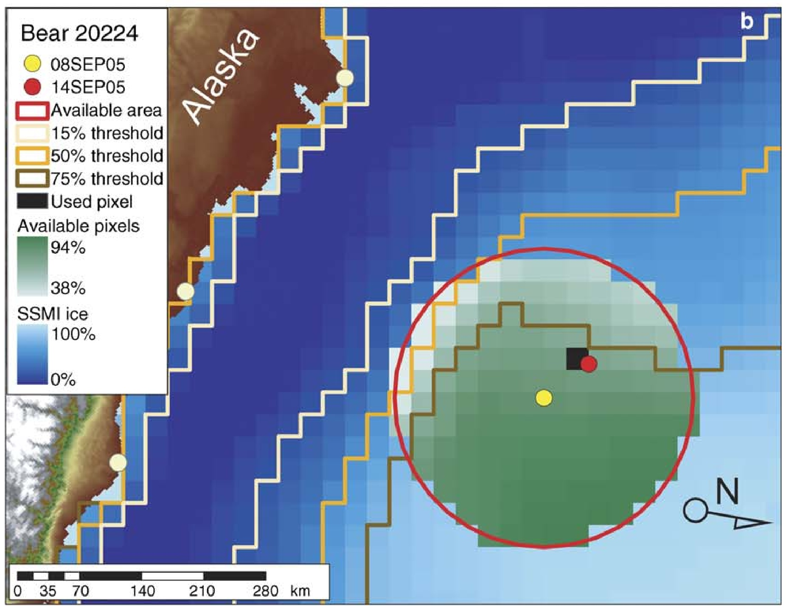

Самый крупный хищник.
Относится к морским млекопитающим.
19 субполуляций, 25-30 тыс. особей
Природоохранный статус МСОП и Красной Книги РФ (Беликов и Кочнев, 2021).
В очень коротком промежутке времени скорость может составлять 40 км/ч.
В долгосрочном периоде скорость 1-2 км/ч, причем самцы передвигаются медленнее одиночных самок и самок с детенышами (Amstrup et al., 2001).

Основный вид жертвы – тюлени.


Доступность солнечного света
Распространение причинно-следственной связи по пищевой цепочке

Оставляют следы
оценка полового состава ввиду сильного полового диморфизма
размер выводка
тропление при отловах
выявление превалирующего направления перемещений


Родовые берлоги с октября-ноября по март-апрель
Как на суше, так и во льдах (Rode et al., 2018)
Скорость порядка 10 км/ч.
Сеголетки умеют плавать.
«Заплывы» на 100 км обычны (Рожнов и др., 2017; Платонов и др., 2019).
В Книге рекордов Гиннеса зафиксирован заплыв на 687 км (Durner et al., 2011) c потерей 22 % массы тела за 9 суток плавания и 54 суток ходьбы.
 Рисунок из работы (Рожнов и др., 2014)
Родовые берлоги на суше: крутизна и экспозиция склонов, снегонакопление
Альтернатива проведения безледового сезона: меньшие энергозатраты
Антропогенные источники пищи (Рожнов и др., 2014; Платонов и др., 2019)
Где тюленей больше, где они доступнее.

Летний минимум без Гренландского моря (Durner et al., 2009).
Линейный тренд (1979-2023) -72±6×103 км2/год
Сегментация (Muggeo, 2003).
Точки разрыва ~2004 и 2007 гг.
Линейный тренд (2007-2023) -11±6×103 км2/год

«Вертикальная» и «горизонтальная» проекция изменений
Вертикальная: на фиксированную дату больше или меньше льда?
Горизонтальная: для фиксированной площади более ранее/позднее таяние/образование льда?

Перемещение самки белого медведя (Рожнов и др., 2017), наложенное на ледовые карты маргинальной зоны льда (US NIC, 2022)

Перемещение самки белого медведя (Рожнов и др., 2017), наложенное на фенологическую карту вскрытия ледяного покрова. Цветовая легенда единая для участков траектории и для фенокарты.

Даты локаций особи (горизонтальная ось) и сроки таяния льда в местах, ближайших к нахождению особи (вертикальная ось).
Красная линия – равенство дат,
Зеленая линия – линейный тренд,
Синяя линия – сглаживание.
Точки ниже красной линии – особь находится в воде или рядом с ней нет льда.
Пример: прошли в поезде 8 вагонов, чтобы попасть в вагон ресторан. Для вас это 5 минут пробраться через тамбурные двери. А 200-метровый поезд проехал 8 км (в 40 раз большее расстояние, чем его длина)

Данные для работы (Платонов и др., 2014).

Рисунок из работы (Платонов и др., 2014).


Рисунок из работы (Платонов и др., 2014).
Argos. Передатчики «Эс-Пас». Трафик CLS.
Построение локаций поставщиком данных:
наименьших квадратов
фильтр Калмана
Argos-фильтры (Freitas et al., 2008; Douglas et al., 2012) для исключения локаций, вызываюших «шипы» траектории.
Метод коррелированного случайного блуждания (Jonsen et al., 2020).
Скорость движения (среднесуточное смещение), прямолинейность траектории
Целенаправленное перемещение
Успешная охота и отдых
Оценка площади
Минимальным выпуклым многоугольником
Методом кёрнел

Рисунок из работы (Durner et al., 2009). Красная окружность – максимально возможное перемещение за 6 суток.
Resource Selection Function (RSF).
Доступно
Использовано
Логистическая регрессия \(w(X)=exp(\beta_{1}x_{1}+\beta_{2}x_{2}+\beta_{3}x_{3}+...)\)
Step selection function (SSF) (Wilson et al., 2022).
Условия окружающей среды при выбранном шаге в сравнении с возможными шагами.
Размер шага (гамма)
Направление шага (вон Мизеса)

Рисунки из работы (Blanchet et al., 2020).

Выбор различных стратегий использование ресурсов среды.
Рисунки из работ (Mauritzen et al., 2002; Laidre et al., 2022).
Постоянно действующая экспедиция РАН по изучению животных Красной книги Российской Федерации и других особо важных животных фауны России, Программа изучения белого медведя в Российской Арктике:
В. Рожнов, С. Найденко, И. Мордвинцев, Е. Иванов, Н. Платонов
Русское географическое общество
Национальный парк «Русская Арктика»
ПАО «НК «Роснефть»
Все манипуляции с белыми медведями выполнены в соответствии с протоколом № 37 от 25 мая 2020 г. Комитета по этике ИПЭЭ РАН.
Постоянно действующая экспедиция РАН


На 08 декабря минимальная протяженность была в 2016 г.↩︎
заменить фото обхвата на фото длины